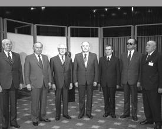
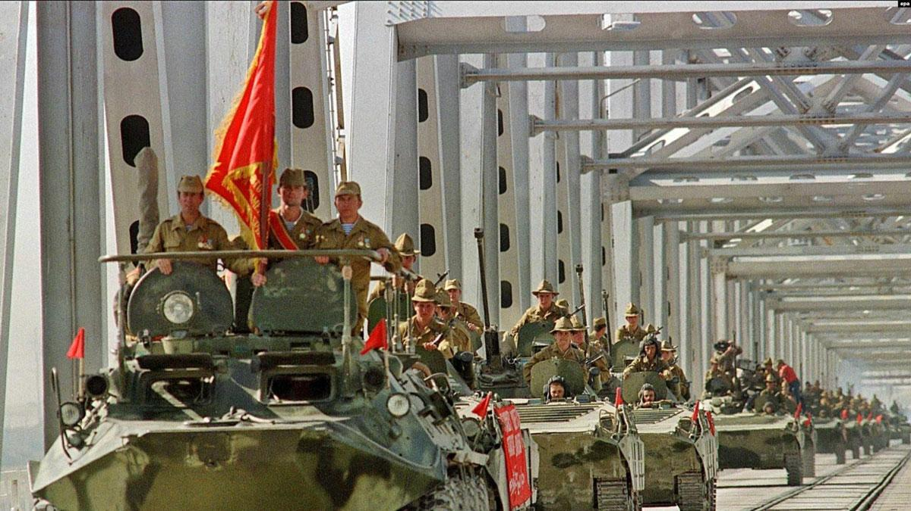

Warsaw Pact History
In January 1949, the Soviet Union had formed “Comecon,” the Council for Mutual Economic Assistance, an organization for the post-World War II recovery and advancement of the economies of the eight communist nations of Central and Eastern Europe. When West Germany joined NATO on May 6, 1955, the Soviet Union viewed the growing strength of NATO and a freshly rearmed West Germany as a threat to communist control. Just one week later, on May 14, 1955, the Warsaw Pact was established as a mutual military defense complement of the Council for Mutual Economic Assistance. The Soviet Union hoped the Warsaw Pact would help it contain West Germany and allow it to negotiate with NATO on a level playing field of power. In addition, Soviet leaders hoped a unified, multilateral political and military alliance would help them reign in the growing civil unrest in Eastern European countries by strengthening the ties between the Eastern European capitals and Moscow.

Yugoslavia, Romania, and Albania
Yugoslavia, Romania, and Albania were exceptions. The three countries completely rejected the Soviet doctrine formulated for the Warsaw Pact. Yugoslavia had broken with the Soviet Union before the Warsaw Pact was created. Albania officially left the Pact in 1968, out of protest against the invasion of Czechoslovakia by Warsaw Pact-led Russian Troops. Romania remained a formal member of the Warsaw Pact largely due to dictator Nicolae Ceaușescu's interest in preserving the threat of a Pact invasion allowing him to sell himself to the people as a loyal Romanian nationalist and to maintain privileged access to his NATO counterparts and a seat at various influential European forums. By the time Andrei Antonovich Grechko, Soviet general and organizer of the invasion of Czechoslovakia, assumed command of the Warsaw Pact in 1960, both Romania and Albania had for all practical purposes defected from the Pact. In the early 1960s, Grechko initiated programs meant to preempt Romanian doctrinal heresies from spreading to other Pact members. No other country succeeded in completely escaping from the Warsaw Pact as had Romania and Albania. 5Even before Nicolae Ceaușescu had come to power, Romania was an independent country, as opposed to the rest of the countries of the Warsaw Pact. Having established its independence from the Ottoman Empire in 1878, Romania was perhaps more fully independent than Cuba—a Communist state that was not a member of the Warsaw Pact. The Romanian regime was largely impervious to Soviet political influence, and Ceaușescu was the only openly declared opponent of glasnost and perestroika.
The Warsaw Pact During the Cold War
Fortunately, the closest the Warsaw Pact and NATO ever came to actual war against each other during the Cold War years from 1995 to 1991 was the 1962 Cuban Missile Crisis. Instead, Warsaw Pact troops were more commonly used for maintaining communist rule within the Eastern Bloc itself. When Hungary tried to withdraw from the Warsaw Pact in 1956, Soviet troops entered the country and removed the Hungarian People’s Republic government. Soviet troops then put down the nationwide revolution, killing an estimated 2,500 Hungarian citizens in the process.
In August 1968, approximately 250,000 Warsaw Pact troops from the Soviet Union, Poland, Bulgaria, East Germany, and Hungary invaded Czechoslovakia. The invasion was triggered by Soviet leader Leonid Brezhnev’s concerns when the Czechoslovakian government of political reformer Alexander Dubček restored freedom of the press and ended government surveillance of the people. Dubček’s so-called “Prague Spring” of freedom ended after Warsaw Pact troops occupied the country, killing over 100 Czechoslovakian civilians and wounding another 500. Just one month later, the Soviet Union issued the Brezhnev Doctrine specifically authorizing the use of Warsaw Pact troops—under Soviet command—to intervene in any Eastern Bloc nation considered to pose a threat to Soviet-communist rule.
End of the Cold War and the Warsaw Pact
Between 1968 and 1989, Soviet control over the Warsaw Pact satellite nations slowly eroded. Public discontent had forced many of their communist governments from power. During the 1970s, a period of détente with the United States lowered tensions between the Cold War superpowers. In November 1989, the Berlin Wall came down and communist governments in Poland, Hungary, Czechoslovakia, East Germany, Romania, and Bulgaria started to fall. Within the Soviet Union itself, the “openness” and “restructuring” political and social reforms of glasnost and perestroika under Mikhail Gorbachev foretold the eventual collapse of the USSR’s communist government As the end of the Cold War neared, troops of the once-communist Warsaw Pact satellite states of Poland, Czechoslovakia and Hungary fought alongside U.S.-led forces to liberate Kuwait in the First Gulf War in 1990. On July 1, 1991, Czechoslovak President, Vaclav Havel formally declared the Warsaw Pact disbanded after 36 years of military alliance with the Soviet Union. In December 1991, the Soviet Union was officially dissolved to become internationally recognized as Russia. The end of the Warsaw Pact also ended the post-World War II Soviet hegemony in Central Europe from the Baltic Sea to the Strait of Istanbul. While Moscow’s control had never been all-encompassing, it took a terrible toll on the societies and economies of a region that was home to over 120 million people. For two generations, Poles, Hungarians, Czechs, Slovaks, Romanians, Bulgarians, Germans, and other nationalities had been denied any significant level of control over their own national affairs. Their governments were weakened, their economies were robbed, and their societies were fractured. Perhaps most importantly, without the Warsaw Pact, the USSR lost its handy, if shaky, excuse for stationing Soviet military outside of its own borders. Absent the Warsaw Pact’s justification, any reinsertion of Soviet forces, such as the 1968 invasion of Czechoslovakia by 250,000 Warsaw Pact troops, would be considered an overt unilateral act of Soviet aggression. Similarly, without the Warsaw Pact, the Soviet Union’s military ties to the region withered. Other former-pact member nations increasingly purchased more modern and capable arms from Western nations, including the United States. Poland, Hungary, and Czechoslovakia began to send their troops to the U.S., Britain, France, and Germany for advanced training. The region’s always-forced and rarely-welcomed military alliance with the USSR were broken at last.
